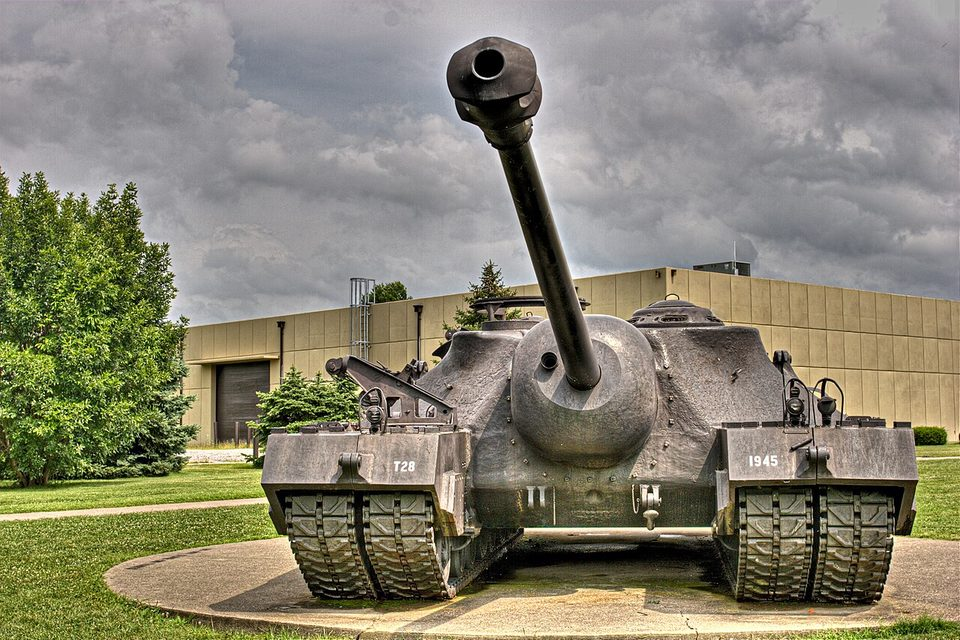
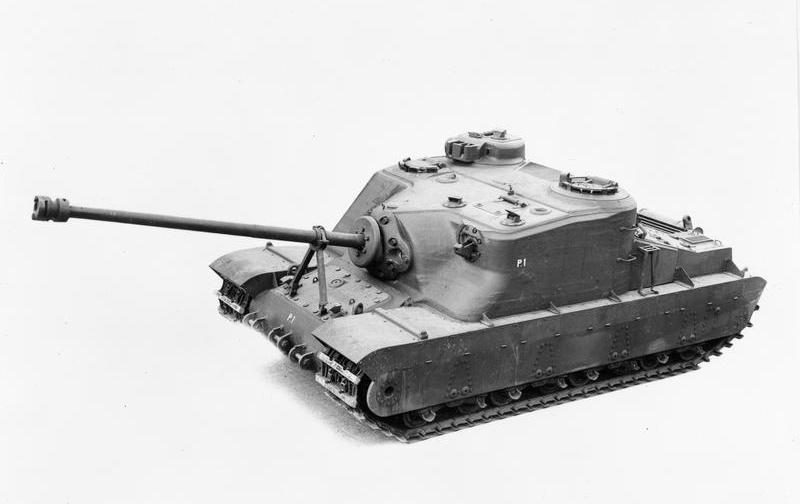

Todos los tanques › Prototipos
Prototipos y tanques raros
Carros que se construyeron en muy pocas unidades y nunca llegaron a fabricarse en serie: superpesados, ideas experimentales y proyectos cancelados. Muchos influyeron en los carros que vinieron después.
Primera Guerra Mundial
1916–1918 · 1 fichaEntreguerras
1919–1939 · 2 fichas-
 Reino Unido · 1926
Reino Unido · 1926Vickers A1E1 Independent
Prototipo de carro pesado
-
 España · 1939
España · 1939Verdeja
Prototipo de carro ligero
Segunda Guerra Mundial
1939–1945 · 5 fichas-
 Reino Unido · 1941
Reino Unido · 1941TOG II
Prototipo de carro pesado
-
 Alemania · 1944
Alemania · 1944Panzer VIII Maus
Prototipo de carro superpesado
-
 Alemania · 1945
Alemania · 1945Panzerkampfwagen E-100
Prototipo de carro superpesado
-

Estados Unidos · 1945T28
Prototipo de carro superpesado
-

Reino Unido · 1945Tortoise
Prototipo de carro de asalto pesado